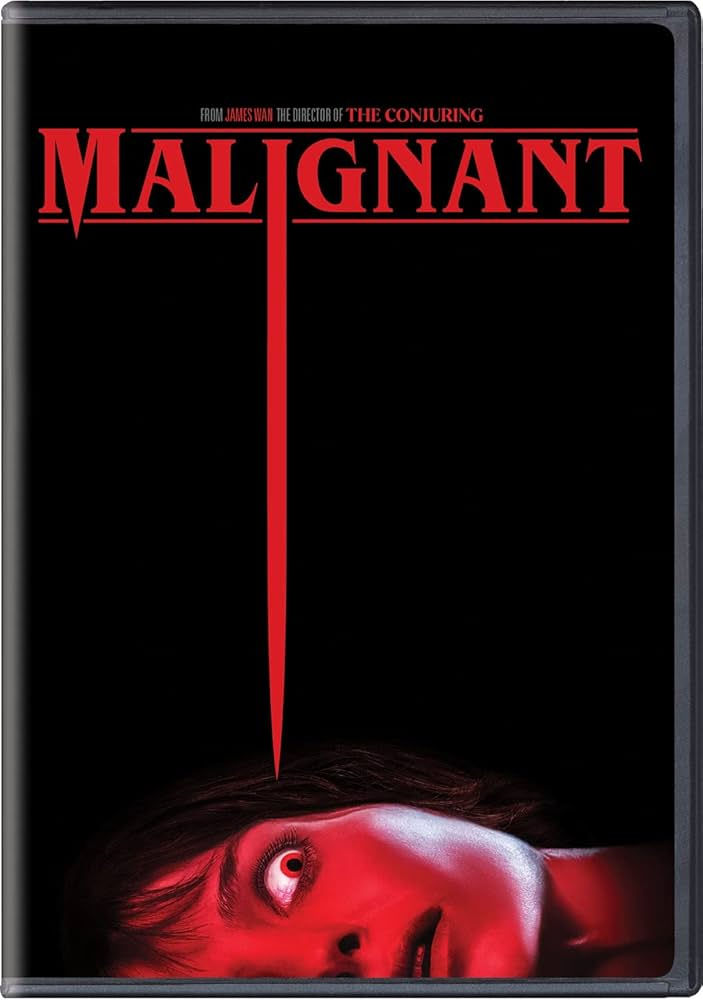

Malignant

Malignant is a 2021 horror film directed by James Wan. I would rate this film a solid 9/10 as the plot twist was eerily cool and unexpected. The movie starts off with introducing the main character, Madison Mitchell. The opening scene starts off with Madison arguing and getting into a fight with her abusive partner. She is pushed into a wall and injures her head. Ever since that day, she has been experiencing headaches and along with that she is also experiencing horrific nightmares. Throughout the movie strange things are happening to Madison and we learn that her nightmares are visions of murders that are actually happening across town. We also get an insight into Madison's childhood. We find out that when she was born she actually had a twin and lost her twin brother. She finds herself still connected to her twin brother 'Literally' and that is the cause of the nightmares and visions that she has been having. Throughout the movie Madison is questioning if her nightmares and visions were just that and what if they were her real memories. This leads the audience to ask themselves this question too. Towards the end of the movie we are met with an eerie and terrifying plot twist that even left me shocked and left me with nightmares after watching the movie. This movie has a running time of 1hr and 51minutes. This movie can be found on streaming services such as YouTube, Amazon Prime, and Apple TV. I recommend watching this movie because it is honestly really good and the plot along with the story telling is just amazing within itself. If you like this, then I recommend you to watch more movies from this director such as Insidious and the Conjuring series!!!
Filed under Horror